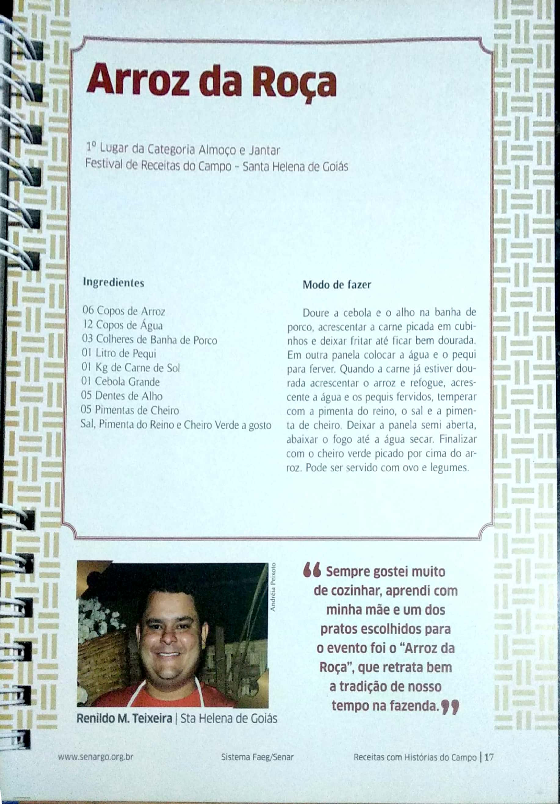

Conectando Vidas entre o Rural e o Urbano
Histórias do campo são um tesouro cheio de sabedoria e tradição, que nos levam a refletir sobre a vida rural e suas experiências. Essas narrativas são passadas de geração em geração e, portanto, se tornam parte de nossa cultura. Assim, cada história traz consigo não apenas as lembranças, mas também as lições valiosas que nos ajudam a entender o mundo em que vivemos. Porque é importante valorizar essas histórias, embora muitas vezes sejam esquecidas, elas ainda têm muito a nos ensinar. Do cultivo da terra às relações familiares, as histórias do campo são uma ode à simplicidade e ao amor pela natureza.
Falando de histórias do campo, não podemos deixar de mencionar como cada atividade diária tem seu próprio conto a ser contado. A vida rural, apesar de ser cheia de desafios, também é repleta de momentos alegres e significativos. E, com isso, as festas tradicionais e os eventos comunitários se tornam cenários de grande fervor e inspiração. No entanto, muitas vezes, esquecemos de valorizar esses eventos. Porque é nesses momentos que os laços se reforçam e a cultura é fortalecida. Então, seja durante a colheita ou em uma grande festividade, cada relato é um pedaço do coração do campo.
Para concluir, o futuro das histórias do campo depende da nossa dedicação em preservá-las e contá-las. Que possamos incentivar as novas gerações a reconhecerem a riqueza de suas raízes. Além disso, é fundamental que as inovações no campo também sejam integradas às tradições, criando assim uma narrativa que une passado e futuro. Porque apenas assim poderemos valorizar e aprender com as histórias do campo, garantindo que não sejam esquecidas no tempo.